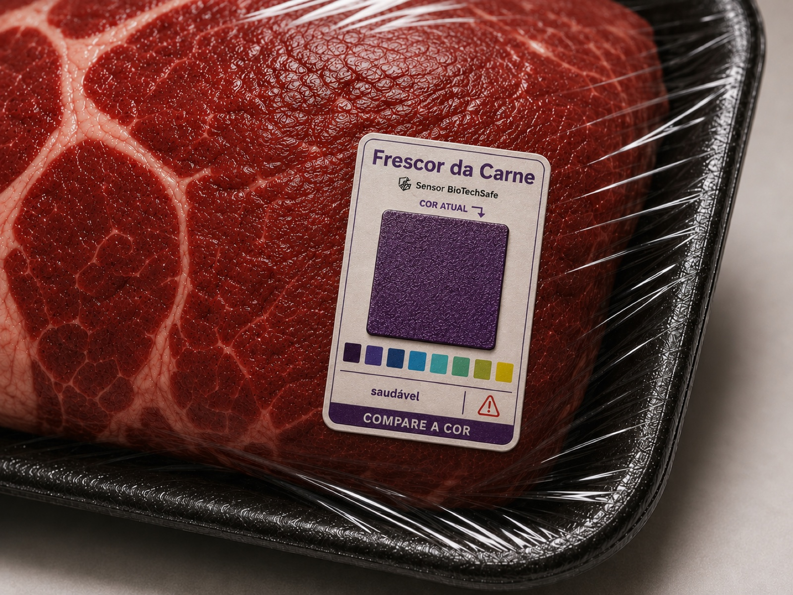
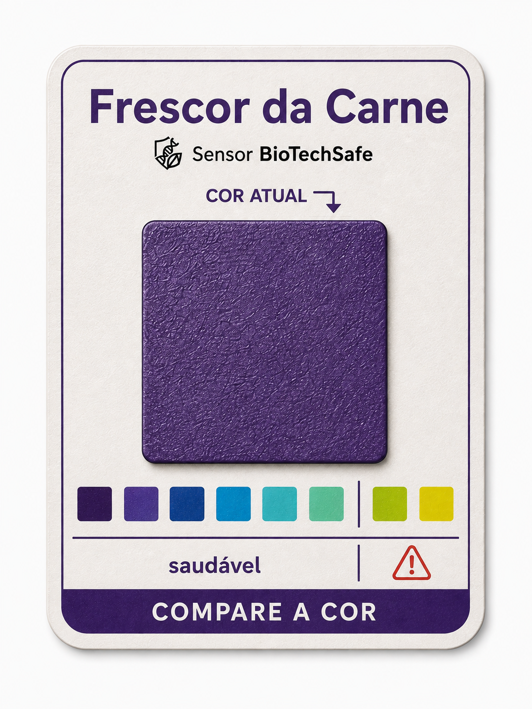

BIOSSENSOR / PIGMENTO NATURAL / TEMPO REAL
Um biossensor natural, aplicado do lado externo da embalagem, que reage ao próprio processo de deterioração da carne, em tempo real, sem abrir o pacote.

Do gás à cor
Tudo acontece direto na embalagem, sem sensores eletrônicos e sem baterias.
O resultado é uma mudança de cor visível através da embalagem, sem abrir o pacote.
O princípio
A BioTechSafe usa um pigmento natural extraído de uma fruta brasileira, que reage aos gases liberados pela carne conforme ela se deteriora.
O sensor muda de cor, do roxo (fresca) ao amarelo (descarte), permitindo checar o estado da carne com um olhar, através da embalagem fechada.

Não é sobre substituir a validade. É sobre mostrar o que ela nunca conseguiu mostrar: o estado real daquela peça específica, naquele momento.
BioTechSafe